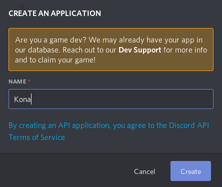

Overview

Warning: Twilight is still a work in progress, so while some of this stuff exists right now, a lot of it doesn't. Features, APIs, and usage of crates not completed is documented for design feedback. You shouldn't try building something yet.
twilight is an ecosystem of asynchronous, unopinionated, and extensible libraries for using the Discord APIs. It has the additional goals of simplicity, fearless breaking changes where needed, and the embracing of third party libraries.
The Guide
In this guide you'll learn about the core crates in the twilight ecosystem, useful first-party crates for more advanced use cases, and third-party crates giving you a tailored experience. You'll build a bot using all of the core crates available, and learn why and how to use services for larger bots.
Links
The organization for the project is on GitHub, named "twilight-rs".
The crates are available on crates.io.
The API docs are also hosted for the latest version.
There is a community and support server on Discord.
A Quick Example
Below is a quick example of a program printing "Pong!" when a ping command comes in from a channel:
use futures::StreamExt;
use twilight::{
command_parser::{Command, Config as ParserConfig, Parser},
gateway::{Config, Event, Shard},
};
use std::{
env,
error::Error,
};
#[tokio::main]
async fn main() -> Result<(), Box<dyn Error>> {
let token = env::var("DISCORD_TOKEN")?;
let shard = Shard::new(token).await?;
let parser = {
let mut config = Config::new();
config.command("ping").add();
config.add_prefix("!");
Parser::new(config)
};
let mut events = shard.events().await;
while let Some(event) = events.next().await {
match event {
Event::MessageCreate(msg) => match parser.parse(&msg.content) {
Command { name: "ping", .. } => println!("Pong!"),
_ => {},
},
_ => {},
}
}
}
Support
Support for the library is provided through the GitHub issues section and the Discord server.
If you have a question, then the issues or the server are both good fits for it. If you find a bug, then the issues section is the best place.
The API documentation is also available.
Supported Rust Versions
Twilight supports Rust versions 1.39 and above.
Breaking Changes
Although Twilight aims to design APIs right the first time, that obviously won't happen. A lot of care is taken into designing them in an unopinionated way, leaving more opinionated concepts to userland libraries.
While Twilight takes care to avoid the need for breaking changes, it will be fearless when it needs to: they won't be avoided for the sake of avoiding a change. Breaking changes won't be piled up over the course of a long time, so when upgrades need to happen they will be quick and painless.
Crates
Twilight is, at heart, an ecosystem. These components of the ecosystem generally, for the most part, don't depend on each other. The crates in it are sectioned into three "parts": the core crates, first-party crates, and third-party crates.
Core Crates
Twilight includes a few crates which are the "building blocks" to your success. You might not need them all, but generally speaking you'll need most of them for your use case. Most of them wrap Discord's various APIs.
- model: All of the structs, enums, and bitflags used by the Discord APIs.
- http: An HTTP client supporting all of the documented features of Discord's HTTP API, with support for ratelimiting, proxying, and more.
- gateway: A client supporting Discord's gateway API.
- cache: Definitions for implementating a cache. An in-process memory implementation is included.
- voice: A client supporting Discord's voice API.
- command-parser: A basic command parser for parsing commands and arguments out of messages.
- twilight: The root crate, re-exporting all of the other core crates in one unified crate.
First-Party Crates
Additionally, there are some first-party crates maintained by the Twilight
organization, but not included in the core experience. These might be for more
advanced use cases or clients for third-party services. Two examples of
first-party crates are twilight-cache-redis - an implementation of a cache using
Redis as a backend - and twilight-lavalink, an implementation of a client for
Lavalink.
Third-Party Crates
Third-party crates may start to exist over time. These aren't officially supported by the Twilight organization, and are maintained by other people.
These are currently no third-party crates. I mean, this thing isn't even at 0.1 yet.
Model
twilight-model is a crate of only serde models defining the Discord APIs with
no implementations on top of them or functions to work with them.
These are in a single crate for ease of use, a single point of definition, and a sort of versioning of the Discord API. Similar to how a database schema progresses in versions, the definition of the API also progresses in versions.
The types in this crate are reproducible: deserializing a payload into a type, serializing it, and then deserializing it again will work.
Defined are a number of modules defining types returned by or owned by
resource categories. For example, gateway are types used to interact with
and returned by the gateway API. guild contains types owned by the Guild
resource category. These types may be directly returned by, built on top of,
or extended by other crates.
Installation
This crate requires Rust 1.31+.
Add the following to your Cargo.toml:
twilight-model = { git = "https://github.com/twilight-rs/twilight" }
Features
twilight-model has a single feature, serde-support. By default it is enabled.
This enables serde support of the models, which brings in four dependencies:
serdeserde_jsonserde-mappable-seqserde_repr
If you don't need serde support, you can disable it:
[dependencies]
twilight-model = { default-features = false, git = "https://github.com/twilight-rs/twilight" }
Links
source: https://github.com/twilight-rs/twilight/tree/master/model
docs: https://docs.rs/twilight-model
crates.io: https://crates.io/crates/twilight-model
HTTP
twilight-http is an HTTP client wrapping all of the documented Discord HTTP API.
It is built on top of Reqwest, and supports taking any generic Reqwest client,
allowing you to pick your own TLS backend. By default, it uses OpenSLL, but it can be changed to use RusTLS a Rust
TLS implementation.
Ratelimiting is included out-of-the-box, along with support for proxies.
Installation
This library requires at least Rust 1.39+.
Add the following to your Cargo.toml:
twilight-http = { git = "https://github.com/twilight-rs/twilight" }
Example
A quick example showing how to send 10 messages, and then print the current user's name:
use futures::future; use std::{env, error::Error}; use twilight_http::Client; use twilight_model::id::ChannelId; #[tokio::main] async fn main() -> Result<(), Box<dyn Error + Send + Sync>> { pretty_env_logger::init_timed(); let client = Client::new(env::var("DISCORD_TOKEN")?); let channel_id = ChannelId(381_926_291_785_383_946); future::join_all((1u8..=10).map(|x| { client .create_message(channel_id) .content(format!("Ping #{}", x)) })) .await; let me = client.current_user().await?; println!("Current user: {}#{}", me.name, me.discriminator); Ok(()) }
Links
source: https://github.com/twilight-rs/twilight/tree/master/http
docs: https://docs.rs/twilight-http
crates.io: https://crates.io/crates/twilight-http
Gateway
twilight-gateway is an implementation of a client over Discord's websocket
gateway.
The main type is the Shard: it connects to the gateway, receives messages,
parses and processes them, and then gives them to you. It will automatically
reconnect, resume, and identify, as well as do some additional connectivity
checks.
Also provided is the Cluster, which will automatically manage a collection of
shards and unify their messages into one stream. It doesn't have a large API --
pretty much just up and down to bring the cluster up or down. It implements
a stream which returns items of the ID of the shard a message came from, and the
parsed event representing it.
Installation
This library requires at least Rust 1.39+.
Add the following to your Cargo.toml:
twilight-gateway = { git = "https://github.com/twilight-rs/twilight" }
Example
Starting a Shard and printing the contents of new messages as they come in:
use futures::StreamExt; use std::{env, error::Error}; use twilight_gateway::Shard; #[tokio::main] async fn main() -> Result<(), Box<dyn Error + Send + Sync>> { pretty_env_logger::init_timed(); let shard = Shard::new(env::var("DISCORD_TOKEN")?).await?; println!("Created shard"); let mut events = shard.events().await; while let Some(event) = events.next().await { println!("Event: {:?}", event); } Ok(()) }
Links
source: https://github.com/twilight-rs/twilight/tree/master/gateway
docs: https://docs.rs/twilight-gateway
crates.io: https://crates.io/crates/twilight-gateway
Cache
Command Parser
The Command Parser is a basic parser for the Twilight ecosystem. We'll get this out of the way first: it's not a framework, and it doesn't try to be.
The parser, for the most part, takes a configuration of prefixes and commands, and attempts to match it to provided strings, returning what command and prefix it matched, if any. The parser will also return a lazy iterator of arguments given to the command.
Included is a mutable configuration that allows you to specify the command names, prefixes, and ignored guilds and users. The parser parses out commands matching an available command and prefix and provides the command arguments to you.
Installation
Add the following to your Cargo.toml:
[dependencies]
twilight-command-parser = { git = "https://github.com/twilight-rs/twilight" }
Examples
A simple parser for a bot with one prefix ("!") and two commands, "echo"
and "ping":
#![allow(unused_variables)] fn main() { use twilight_command_parser::{Command, Config, Parser}; let mut config = Config::new(); // (Use `Config::add_command` to add a single command) config.command("echo").add(); config.command("ping").add(); // Add the prefix `"!"`. // (Use `Config::add_prefixes` to add multiple prefixes) config.add_prefix("!"); let parser = Parser::new(config); // Now pass a command to the parser match parser.parse("!echo a message") { Some(Command { name: "echo", arguments, .. }) => { let content = arguments.as_str(); println!("Got an echo request to send `{}`", content); }, Some(Command { name: "ping", .. }) => { println!("Got a ping request"); }, // Ignore all other commands. Some(_) => {}, None => println!("Message didn't match a prefix and command"), } }
Links
source: https://github.com/twilight-rs/twilight/tree/master/command-parser
docs: https://docs.rs/twilight-command-parser
crates.io: https://crates.io/crates/twilight-command-parser
Twilight
twilight is the root crate of the entire project. It's what could be called a
"skeleton crate": all it does is re-export all of the other core crates.
Since all of the crates in Twilight are building blocks, they aren't very intertwined. This means that they can be used separately without having to bring in the entire ecosystem of core crates. Most people, though, will need all of these crates. To create a single unified experience with easy installation, this crate exists to provide all of them.
Source Code
This is the entire contents of the library:
#![allow(unused_variables)] fn main() { #[cfg(feature = "cache")] pub extern crate twilight_cache as cache; #[cfg(feature = "command-parser")] pub extern crate twilight_command_parser as command_parser; #[cfg(feature = "gateway")] pub extern crate twilight_gateway as gateway; #[cfg(feature = "http")] pub extern crate twilight_http as http; #[cfg(feature = "model")] pub extern crate twilight_model as model; #[cfg(feature = "voice")] pub extern crate twilight_voice as voice; }
Installation
This library requires at least Rust 1.39+.
Add the following to your Cargo.toml:
twilight = { git = "https://github.com/twilight-rs/twilight" }
Features
All of the crates that are re-exported can be disabled. For example, if you need
everything but voice, then you can disable only voice. This looks like:
[dependencies.twilight]
default-features = false
features = ["cache", "command-parser", "gateway", "http", "model"]
git = "https://github.com/twilight-rs/twilight"
This is the list of features, which are all enabled by default:
cachecommand-parsergatewayhttpmodelvoice
If you're developing a library, it's easier for users to know what you depend on by depending on the individual crates. If you're making a framework, this might look like:
[dependencies]
twilight-cache = { git = "https://github.com/twilight-rs/twilight" }
twilight-gateway = { git = "https://github.com/twilight-rs/twilight" }
twilight-http = { git = "https://github.com/twilight-rs/twilight" }
Links
source: https://github.com/twilight-rs/twilight
docs: https://docs.rs/twilight
crates.io: https://crates.io/crates/twilight
First-party
Twilight has a couple of first-party crates maintained by the organization, but not included as part of the core experience. These are entirely opt-in, and are for more advanced use cases or integration with third party software.
Although not a part of the core experience, these are given the same level of support as the core crates.
The crates are still very much a work in progress and will be published as they are finished.
Redis Cache
twilight-cache-redis will be an implementation of a cache using Redis as a backend. It
is entirely stateless other than the TCP connection used by redis itself.
Read the section on the cache crate for more information on how this is implemented.
Example
Creating a connection to the redis database and getting a guild by ID:
use twilight_cache_redis::RedisCache; #[tokio::main] async fn main() -> Result<(), Box<dyn Error>> { let cache = RedisCache::connect(("0.0.0.0", 6379)).await?; if let Some(guild) = cache.guild(620980184606048276).await? { println!("Guild name: {}", guild.name); } Ok(()) }
Links
source: https://github.com/twilight-rs/twilight/tree/master/cache/redis docs: https://docs.rs/twilight-cache-redis crates.io: https://crates.io/crates/twilight-cache-redis
Lavalink
twilight-lavalink will be a client for Lavalink using twilight-gateway.
Links
source: https://github.com/twilight-rs/twilight/tree/master/lavalink docs: https://docs.rs/twilight-lavalink crates.io: https://crates.io/crates/twilight-lavalink
Third-party
Maybe one day there will be third-party crates to mention here.
But right now, there isn't.
Building a Bot
In this chapter you'll learn what you need to create, compile, write, and run your bot.
The guide assumes that have experience with Rust, and assumes that you are caught up on its features, namely async/await support, which was introduced in Rust 1.39. Also assumed is that you have rustup installed and understand the basics on how to use it.
A minimal amount of experience with how Discord bots work is expected, but you will be guided through how to create a bot user.
Preparation
You'll need a couple of things before you get started with your bot.
Rust Setup
Twilight requires async/await support, which means that you need to have a fairly recent version of rust, 1.40+ should work. If you haven't installed it, you should. Rust can be installed with rustup.
Now you'll want to make a project for your bot:
$ cargo new bot-name && cd $_
Making a Bot User
If you already know how to do this, feel free to skip to Installing Twilight.
In the Discord Developer Portal you'll find a page with a list of your applications. Odds are if you don't know how to make a bot user, you haven't before, so this is probably empty.
In the top-right you'll see a blurple New Application button. Click it.
You'll be asked to give your application a name. For the example, we're naming the application Kona. It doesn't matter what you name it, and it can be changed later.

Now you'll be taken to your new application's page. On the sidebar, click Bot.

Now you'll see a button to Add a Bot. Click it. It'll ask if you're really sure if you want to do this. Yeah, you are sure.

Finally, you have a bot user. You can change its avatar and its username, so that's cool, but not really what we need to care about. What you'll need is the token. This is what will allow you to connect your bot to Discord's APIs. To get it, click Copy.
Note: It's very, very, very important that you don't give this token to anybody. If anyone has your token, then they can spam guilds, ban users, leave all the guilds that the bot is in, burn your house down, and everything.
Installing Twilight
Since this guide assumes familiarity with Rust already, this guide won't explain how using Cargo works.
We're going to add twilight as a dependency, which is the root crate re-exporting
all of the core crates, such as the HTTP and gateway clients, the models,
and cache.
To do that, add the following to your Cargo.toml file:
[dependencies]
twilight = { git = "https://github.com/twilight-rs/twilight" }
Now you're all set to get programming! In the next chapter you'll learn how to write a simple ping-pong mechanism and why it works.
Pong!
Have Some Fun
Basic Moderation
Services
Why Build Services?
Using an HTTP Proxy
Using a Redis Cache
Using a Message Broker
Using the Gateway Queue
If your bot's shards are multi-processed, then a good choice is to use the [Gateway Queue]. The Gateway Queue is a lightweight but powerful application that you can host to queue shards across all of your processes.
The Gateway Queue is library and language agnostic: it's an HTTP server that you call whenever a shard needs to reconnect to the gateway.
How it works
When one of your shards disconnects and needs to perform a full reconnect, then it needs to start a new session with the gateway. If you have multiple processes managing shards, then you may not have communication between these processes. The problems start to happen when multiple shards from these processes try to reconnect at the same time: all but 1 will get ratelimited.
This is because there's a 5 second ratelimit between new sessions. By sending an HTTP request to the Gateway Queue, it will ratelimit the requests and "stall" them, responding with a friendly message once that shard can reconnect:
{"message": "You're free to connect now! :)"}
Example
The API is pretty minimal, probably. It's just an HTTP request:
#![allow(unused_variables)] fn main() { reqwest::get("http://gateway-queue").await?; }
No headers, body, or particular method need to be set. They're all ignored. The request will get a response once the request has gone through the queue.
Running it
If you're using Docker, you can clone the repo and run:
$ docker build . -t twilight-gateway-queue
$ docker run -itd -e HOST=0.0.0.0 -e PORT=5000 twilight-gateway-queue
If you're not, you can compile it via Cargo:
$ cargo build --release
$ HOST=0.0.0.0 PORT=5000 ./target/release/twilight-gateway-queue
HOST and PORT are the only two environment variables.
Links
source: https://github.com/twilight-rs/gateway-queue
Moving Forward
Bots using Twilight
Below is a list of bots known to be using the Twilight ecosystem. The use could be as small as only the gateway or HTTP proxy, or as large as all of the core crates.
Lasagne bot
Lasagne bot is a bot that posts garfield comics.
Source: Sr.ht
Changelogs
No changes yet! :)
Contributors
Thanks (a lot!) to the following people for contributing: